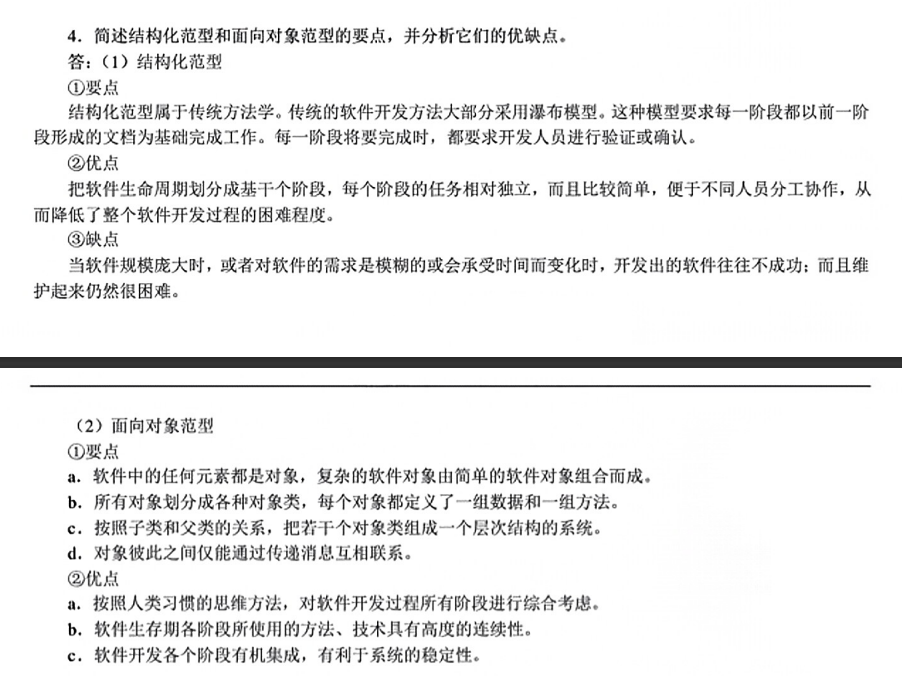
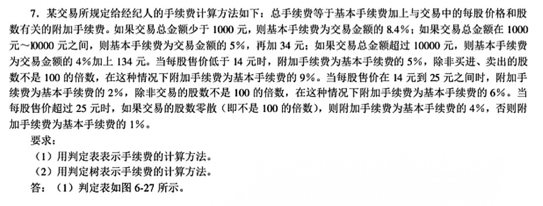

软件工程知识点整理
声明
此份复习资料适合于江苏大学计算机学院软件工程课程，该资料为作者自己整理，如有整理不好之处请多包涵🫡
第 1 章 软件工程学概述
什么是软件危机？它有哪些典型表现？为什么会出现软件危机？（选择题、判断题、简答题）
软件危机是在计算机软件开发和维护过程中所遇到的一系列严重问题
典型表现：
- 对软件开发成本和进度的估计常常很不准确
- 用户对“已完成的”软件系统不满意的现象常常发生
- 软件产品的质量往往靠不住
- 软件常常是不可维护的
- 软件通常没有适当的文档资料
- 软件成本在计算机系统总成本中所占的比例逐年上升
- 软件开发生产率提高的速度远远跟不上计算机应用迅速普及深入的趋势
为什么出现软件危机：
- 对用户要求没有完整准确的认识就匆忙着手编写程序
什么是软件过程？什么是软件工程？什么是软件工程方法学？（选择题、判断题、简答题）
软件过程是为了获得高质量软件所需要完成的一系列任务的框架，他规定了完成各项任务的工作步骤
软件工程是指导计算机软件开发和维护的一门工程学科
通常在软件生命周期全过程中使用的一整套技术方法的集合称为方法学，也叫做范型
- 软件工程方法学包含三个要素
- 方法
- 工具
- 过程
- 软件工程方法学包含三个要素
简述结构化范型和面向对象范型的要点，并分析它们的优缺点。（选择题、判断题、简答题）
结构化范型
- 优点：面向过程或者面向数据
- 缺点：增加了软件开发和维护的难度
面向对象范型
- 四个要点
- 把对象作为了融合数据及在数据上的操作行为为统一的软件构件
- 把所有对象都划分成类
- 按照父类与子类的关系把若干个相关类组成了一个具有层次结构的系统
- 对象彼此之间仅能通过发送消息互相联系
- 面向对象方法学的方法？
- 面向对象方法学的特征？
- 四个要点
简述软件生命周期每个阶段的基本任务？（选择题、判断题、简答题）
问题定义
- 明确需要解决的问题是什么
可行性研究
- 对于上个阶段确定的问题有没有行得通的解决办法
需求分析
- 为了解决这个问题，目标系统需要做什么
总体设计
- 应该怎样实现目标系统
详细设计
- 总体设计节点使用比较抽象的方式表述了解决问题的办法，该阶段将办法具体化
编码和单元测试
- 写出正确的容易理解、容易维护的程序模块
综合测试
- 通过各种类型的测试是软件到达预定的效果
软件维护
- 通过各种必要的维护活动使系统持久的满足用户的需求
什么是软件生命周期模型？试比较瀑布模型、快速原型模型、增量模型、螺旋模型的优缺点，说明每种模型的适用范围。（选择题、判断题、简答题）
软件周期模型规定了把生命周期划分成哪些阶段及各个阶段的执行顺序，因此也称为过程模型
各种模型的分析（书15~19页）
- 瀑布模型
- 优点
- 强迫开发人员使用规范的方法
- 严格规划了每个阶段必须提交的文档
- 要求每个阶段交出的所有产品必须经过质量保证小组的仔细验证
- 缺点
- 瀑布模型是由文档驱动的
- 优点
- 快速原型模型
- 优点
- 软件开发基本是线性顺序进行的
- 缺点
- 无法完全预测未来设计的问题
- 优点
- 增量模型
- 优点
- 较短时间内向用户提交可完成部分工作的产品
- 逐步增加产品功能可以使用户具有充裕时间学习和适应新产品，减少全新软件可能带给客户组织带来冲击
- 缺点
- 把每个新的增量构件集成到现有软件体系结构中时，必须不破坏原来已经开发出来的产品
- 对开发人员的技术要求比较高
- 优点
- 螺旋模型
- 优点
- 对可选方案和约束条件的强调有利于已有软件的重用，有助于把软件质量作为软件开发的一个重要目标
- 减少过多测试或者测试不足带来的风险
- 螺旋模型中维护只是模型的另一个周期，维护和开发之间并没有本质区别
- 缺点
- 由于其是风险驱动的，软件开发人员必须具备风险评估的经验和该方面的专门知识
- 优点
- 瀑布模型
第 2 章 可行性研究
可行性研究的目的和任务是什么？从哪些方面研究目标系统的可行性？（选择题、判断题、简答题）
目的和任务：用最小的代价在尽可能短的时间内确定问题是否可以被解决
哪几个方面
- 技术可行性
- 经济可行性
- 操作可行性
系统流程图的常用符号及含义（选择题、判断题）
这是一个用于描述物理层面上的操作过程的图
什么是数据流图、数据字典，在可行性分析阶段，它们分别描述系统的哪些方面？它们之间有何联系？（选择题、判断题、简答题）
数据字典
- 关于数据的信息的集合，也就是对数据流图中包含的所有元素定义的集合
数据流图
- 描述信息流和数据从输入移动到输出的过程中所经受的变换的图形化技术
相互关系
- 数据流图和数据字典共同构成系统的逻辑模型，没有数据字典，数据流图就不严格，然而没有数据流图，数据字典也难以发挥作用。只有数据流图和对数据流图中的每一个元素的精确定义放在一起才能共同构成系统的规格说明。
设计数据流图、数据字典，难度不超过书后习题（应用题）
数据流图可以参考书44页两张图
符号规定与41页
相关习题见平时作业
第 3 章 需求分析
为什么要进行需求分析?通常对软件系统有哪些需求？（选择题、判断题、简答题）
为了开发出真正满足用户需求的产品软件，首先必须知道用户的需求
具体需求
- 功能需求
- 性能需求
- 可靠性和可用性需求
- 出错处理需求
- 接口需求
- 约束
- 逆向需求
- 将来可能提出的要求
需求分析的任务。（选择题、判断题）
确定对系统的总和要求
分析系统的数据要求
导出系统的逻辑模型
修正系统开发计划
需求分析过程应该建立 3 种模型，各有什么作用？（选择题、判断题）
数据模型
- 描绘数据对象及数据对象之间的关系
功能模型
- 描绘当数据在软件系统中移动时被变换的逻辑过程，指明系统具备变换数据功能
行为模型
- 指明了作为外部事件结果的系统行为，描绘了系统的各种行为模式和在不同状态间转换的方式
ER 图（选择题、判断题、应用题）
书64页 实体-联系图
状态转换图（课后习题）（应用题）
书67页 课后习题
层次方框图和 IPO 图的作用（选择题、判断题）
层次方框图（68页）
- 用树形结构的一系列多层次的矩形框描绘数据的层次结构
IPO图（69页）
- 描绘输入数据、对数据的处理和输出数据之间的关系
第 5 章 总体设计
总体设计过程通常由两个主要阶段组成:系统设计阶段,确定系统的 具体实现方案;结构设计阶段,确定软件结构。典型的总体设计过程 包括下述 9 个步骤。（选择题、判断题）
设想供选择的方案、
选取合适的方案
推荐最佳方案
功能分解
设计软件结构
设计数据库
制定测试计划
书写文档
审查和复审
在总体设计阶段，模块化、抽象、逐步求精和信息隐藏是通常应该遵循的一些基本原理，简要说明这些原理所表达的思想？ 什么是耦合？什么是内聚？衡量模块独立性的标准又是什么？（选择题、判断题、 简答题）
94页~99页
根据数据流图设计软件的结构图（选择题、判断题、 应用题）
111页
第 6 章 详细设计
详细设计阶段的任务还不是具体地编写程序,而是要设计出程序的 “蓝图”,以后程序员将根据这个“蓝图”写出实际的程序代码（选择题、判断题）
该题目就是考点
什么叫结构程序设计？（选择题、判断题、简答题）
如果一个程序的代码块仅仅通过顺序、选择和循环着三种基本控制结构进行连接，并且每个代码块只有一个入口和一个出口，则称这个程序是结构化的
程序流程图、盒图和判定表是详细设计过程中常用的图形表达工具，请分别说明它们各自的功用和特点？（选择题、判断题）
程序流程图
- 功用
- 描述过程设计的方法
- 特点
- 优点：
- 对控制流程的描述直观
- 缺点：
- 诱使程序员过早的考虑程序的控制流程而不去考虑程序的全局结构
- 使用箭头代表控制流，因此程序员不受任何约束，可以完全不顾结构程序设计的精神，随意转移控制
- 不易表示数据结构
- 优点：
- 功用
盒图
- 特点
- 功能域明确
- 不可能随意转移控制
- 很容易确定局部和全局数据的作用域
- 很容易表现出嵌套关系，也可以表示模块的层次结构
- 特点
判定表
- 功用
- 清晰的表示复杂的条件组合与应做的动作之间的对应关系
- 功用
程序流程图、盒图和判定表（难度不超过书后习题）（应用题）
平时作业题
Jackson 图的特点（选择题、判断题）
便于表示层次结构，而且对目录进行自定向下分解的有力工具
形象直观可读性好
既能表示数据结构也能表示程序结构
详细设计除了应该保证软件的可靠性之外,使将来编写出的程序可读性好﹑容易理解、容易测试、容易修改和维护,是详细设计阶段最 重要的目标。 过程设计应该在数据设计.体系结构设计和接口设计完成之后进行, 它的任务是设计解题的详细步骤(即算法),它是详细设计阶段应完 成的主要工作。过程设计的工具可分为图形、表格和语言 3 类,这 3 类工具各有所长,读者应该能够根据需要选用适当的工具（选择题、判断题）
第 7 章 实现
软件测试在软件生命周期中横跨两个阶段。通常在编写出每个模块 之后就对它做必要的测试(称为单元测试),模块的编写者和测试者是 同一个人,编码和单元测试属于软件生命周期的同一个阶段。（选择题、判断题）
测试的目的就是在软件投入生产性运行之前,尽可能多地发现软件中的错误。（选择题、判断题）
何谓白盒测试、黑盒测试？在两种测试中采用的最重要的技术有哪些？（选择题、判断题、简答题）
白盒测试
- 知道产品内部工作过程，通过测试来检验内部动作是否按照规格说明书上的规定正常进行
- 测试技术：
- 逻辑覆盖
- 控制结构测试
黑盒测试
- 已经知道产品应具备的功能，通过测试来检验每个功能都能正常使用
- 测试技术
- 等价划分
- 边界值分析
- 错误推测
单元测试期间着重从哪 5 个方面对模块进行测试？（选择题、判断题）
模块接口
局部数据结构
重要的执行通路
出错处理通路
边界条件
自顶向下集成测试和自底向上集成测试有什么区别？ 什么是α测试和β测试?（选择题、判断题、简答题）
自顶向下：从主控模块开始沿着程序的控制层次向下移动，逐渐把各个模块结合起来。
自底向上：从“原子模块”开始组装和测试
α测试：由用户在开发者擦和场所进行，并且在开发者对用户的“指导”下进行测试，开发者负责记录发现的错误和使用中遇到的问题
β测试：由软件的最终用户们在一个或多个客户场所进行，开发者通常不在测试的现场。
设计逻辑覆盖的测试用例（判断题、应用题）（重点）
书162页
能区分等价划分、边界值分析、错误推测（选择题、判断题）
考点
什么是测试用例（选择题、判断题）
测试用例是针对软件应用程序或系统的特定功能而编写的一系列步骤，旨在评估其是否按照预期进行操作。
第 8 章 维护
软件维护需要的工作量很大,平均说来,大型软件的维护成本高达开发成本的 4 倍左右（选择题、判断题）
软件维护的定义？四类维护活动是什么？哪种活动比例最大、最小（选择题、判断题）
软件维护就是在软件已经交付使用之后，为了改正错误或者满足新的需求而要修改软件的过程
四类维护活动：
- 完善性维护（50%~66%）（最大）
- 改正性维护（17%~21%）
- 适应性维护（18%~25%）
- 预防性维护（4%）（最小）
什么是结构化维护？结构化维护的特点是什么？（选择题、判断题、简答题）
如果有一个特定的软件配置存在，维护工作从评价设计文档开始，确定软件重要的结构特点、性能特点及接口特点；估量重要的改动将带来的影响，并计划实施途径，然后首次修改设计并且对做出的修改进行仔细复查。接下来编写相应的源程序代码；使用在测试说明书中包含的信息进行回归测试；最后把修改的软件再次交付使用。
特点：
- 减少精力的浪费
- 提高维护的总体质量
根据维护阶段的事件流，第一件事是？最后一件是？（选择题、判断题）
第一件事：确定要求进行的维护的类型
最后一件事情：复审
软件的可维护性与哪些因素有关?在软件开发过程中应该采取哪些措施来提高软件产品的可维护性?（选择题、判断题、简答题）
有关因素：
- 可理解性
- 可测试性
- 可修改性
- 可移植性
- 可重用性
在每个阶段结束前的技术审查和管理复查中,应该着重对可维护性进行复审过程中，应该对将来要改进的部分和可能要改进的部分加以注意指明。应在讨论软件的可移植性问题，考虑可能影响软件维护的系统界面。在设计和编码过程中应该尽可能使用可重用的软件构件，每个测试步骤都可以暗示在软件正式交付使用之前,程序中可能需要做预防性维护的部分。在完成每项维护工作之后,都应该对软件维护本身仔细认真地复审。
什么是逆向工程？什么是代码重构？（选择题、判断题）
分析程序以便在比源代码更高的抽象层次上创建出程序的某种表示过程
不修改整体程序体系结构，仅关注个体模块的设计细节以及在模块中定义的局部数据结构的再生程序活动
预防性维护实质上是软件再工程。典型的软件再工程过程模型定义 了库存目录分析、文档重构、逆向工程、代码重构﹑数据重构和正 向工程 6 类活动（选择题、判断题）
第 9 章 面向对象方法学引论
什么是模型?开发软件为何要建模?（选择题、判断题）
为了理解事物而对事物作出的一种抽象，是对事物的一种无歧义的书面描述
对目标系统进行分析的初始阶段，面对大量模糊的、涉及众多专业领域的、错综复杂的信息，系统信息员往往感到无从下手，模型提供了组织大量信息的一种有效机制。
什么是面向对象方法学?它有哪些优点?（选择题、判断题、简答题）
什么是？
优点：
- 与人类习惯的思维方法一致
- 稳定性好
- 可重用性好
- 较易开发大型软件产品
- 可维护性好
类、对象、实例这三个概念的区别？（选择题、判断题、简答题）
类->对象->实例
3 种模型的作用？（选择题、判断题）
描述系统数据结构的对象模型
描述系统控制结构的动态模型
描述系统功能的功能模型
类及类与类之间的 4 种关系，图形符号（选择题、判断题）
关联
聚集
泛化
依赖和细化
简单的用例图的画法（应用题）
见相关习题
数据流图和对象模型之间的关系（选择题、判断题）
数据流图用于描述系统的数据流动和处理流程，而对象模型用于描述系统的对象、类别和它们之间的关系。
第 10 章 面向对象分析
不论采用哪种方法开发软件,分析的过程都是提取系统需求的过程。 分析工作主要包括 3 项内容,这就是理解、表达和验证。 面向对象分析(OOA)的关键是识别出问题域内的类与对象,在用面 向对象观点建立起的 3 种模型中,对象模型是最基本、最重要、最核 心的。
面向对象建模 3 个子模型与 5 个层次是什么？主题层的作用？
三个子模型
- 描述系统数据结构的对象模型
- 描述系统控制结构的动态模型
- 描述系统功能的功能模型
五个层次
- 主题层
- 控制可见性和指导读者注意力
- 类与对象层
- 结构层
- 属性层
- 服务层
- 主题层
面向对象分析时，为了确定类与对象，经常采用一种非正式分析法， 其基本思路是什么？采用该方法建立系统的对象模型。 难度与本章习题第 4 题相当
非正式分析法：
- 以自然语言书写的需求陈述作为依据，把陈述中的名词作为类与对象的候选者，用形容词作为确定属性的线索，把动词作为服务（操作）的候选者。
习题见作业
动态模型和功能模型在作业中完成，不列入考试范围
该考点不考
平时作业答案整理
第一次作业
作业内容
P32页 第1题
P32页 第3题
P32页 第4题

P33页 第6题
P33页 第7题
第二次作业
作业内容
P54页第5题
P73页第1题
P73页第3题
P73页第4题
P73页第5题
P73页第6题
第三次作业
作业内容
P114页第3题
P140页第3题
P140页第4题
P142页第7题

第四次作业
作业内容
P184页第2题

P184页第4题（1）（3）
P185页第6题
P201页第1题
第五次作业
作业内容
P229页第2题
P229页第3题
P229页第4题
P229页第6题
P229页第9题
P229页第10题
P256页第1题